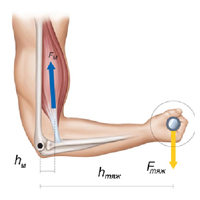
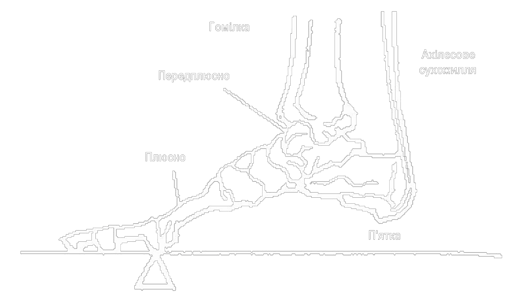

Важелі в тілі людини

Важіль. Умова рівноваги важеля
Як ви знаєте, людина - істота багатогранна: вона підкорила найвищі гірські вершини, опустилася в найглибші точки Світового океану, побувала на Місяці, розщепила атомне ядро. Але найчастіше ми не замислюємося, а що ж ми являємо собою, що ми можемо зробити, якими можливостями й ресурсами володіємо?
Статика займається вивченням сил, що діють на тіла, які перебувають у рівновазі. Методи статики застосовуються у різних областях діяльності людини. Архітектори й інженери повинні вміти розраховувати сили, що діють на конструкційні елементи будинків, мостів, верстатів, автомобілів, космічних кораблів і інших об'єктів, оскільки будь-який матеріал може деформуватися або руйнуватися, якщо прикласти до нього дуже велику силу.
Важіль – це тверде тіло, що може обертатися навколо нерухомої опори. Найменшу відстань від осі обертання до напрямку дії сили називають плечем сили.
Досліди показують, що важіль перебуває в рівновазі під дією двох сил, якщо:
- прикладені до важеля сили намагаються обертати його в протилежних напрямках;
- модулі, прикладених до важеля сил обернено пропорційні плечам цих сил: F1/F2=l2/l1.
Добуток сили на її плече називають моментом сили. М=Fl.
З умови рівноваги важеля випливає, що використовуючи важіль, можна одержати виграш у силі. Силою, прикладеною до більшого плеча важеля, можна зрівноважити силу, що значно більша за прикладену.
Важіль має дуже важливу властивість, що обумовила його широке поширення в природних механізмах, таких, наприклад, як кістяки людини й тварин. Ця властивість - дуже високий коефіцієнт корисної дії, що досягає 98-100%. Високий КПД важеля визначається тим, що в ньому малі втрати на тертя.
З умови рівноваги важеля випливає, що використовуючи важіль, можна одержати виграш у силі. Силою, прикладеною до більшого плеча важеля, можна зрівноважити силу, що значно більша за прикладену.Важіль має дуже важливу властивість, що обумовила його широке поширення в природних механізмах, таких, наприклад, як кістяки людини й тварин. Ця властивість - дуже високий коефіцієнт корисної дії, що досягає 98-100%. Високий КПД важеля визначається тим, що в ньому малі втрати на тертя.
Важільними механізмами в кістяку людини є майже всі кості, що вільно рухаються: кістки кінцівок, нижня щелепа, череп (точка опори - перший хребець), фаланги пальців.
Головні кістки й м’язи руки людини показані на малюнку. Кисть за допомогою лучезап’ястного суглоба кріпиться до променевої кістки, що, у свою чергу, прикріплюється до ліктьової кістки за допомогою ліктьового суглобу. За допомогою плечового суглобу рука кріпиться до лопатки. Основними робочими м’язами руки, відповідальними за переміщення передпліччя, є біцепс (двоголовий м'яз) і трицепс (триголовий м’яз). Як всі м’яз, вони не можуть створювати зусиль, що штовхають, - вони можуть тільки тягти. Коли людина піднімає однією рукою предмет, біцепс скорочується, а трицепс подовжується. Коли людина опускає предмет, відбувається протилежне, у чому неважко переконатися на досвіді.
Зокрема, щоб удержати вантаж якоїсь маси, необхідне зусилля м’яза, яке майже в 10 разів перевищує силу ваги, що діє на вантаж.
Інший приклад важеля в тілі людини - череп. Вісь обертання цього важеля проходить через зчленування черепа з першим хребцем. Попереду від точки опори на відносно короткому плечі діє сила ваги голови за - сила тяги м'язів і зв'язувань, прикріплених до потиличної кістки.
Ще одним прикладом важеля в тілі людини є дія стопи при підйомі на напівпальці. Опорою важеля в цьому випадку служить голівка плюсневих кісток. Подолана сила - вага тіла, прикладена до таранної кістки. М’язова сила, що здійснює підйом тіла, передається через ахіллове сухожилля, прикладене до виступу п’яти.
Які сили діють на стопу людини при підйомі на напів-пальці?

Знання сил, що діють у суглобах і м'язах людини, дуже важливе для медицини (і, насамперед, для лікування травм), не менш важливе для наукового підходу до занять спортом.
Багато завдань на рівновагу сил можна сформулювати, розглядаючи системи витяжки кісток. При лікуванні травм, щоб зростити зламані кості або усунути інші ушкодження, необхідно фіксувати травмовані ділянки й урівноважувати сили, які діють у місці перелому доти, поки він не зрастеться. У лікарській практиці для цього застосовують різні системи витяжки, які використають вантажі, троси й блоки. Конструкція всіх цих систем заснована на тому, що натяг тросу однаковий у всіх його точках і дорівнює Мg, де М - маса вантажу, що створює натяг. Блоки, звичайно, служать для зміни напрямку дії сили.